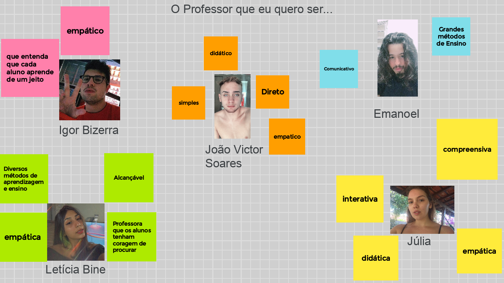
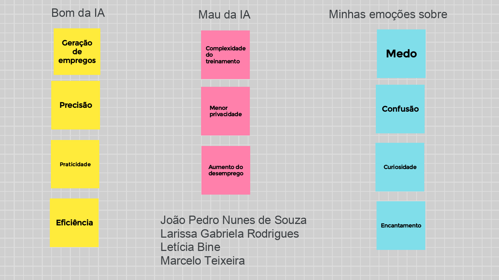
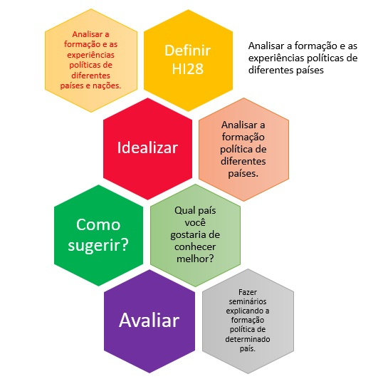

bem-vindos ao meu cantinho 🥰
aproveitem para dar uma olhadinha na última vídeo aula que eu postei no YouTube👈
imagem minha no balneário da minha cidade, Rancharia-SP
cc: oi, eu sou a Letícia
seis e ônibus
cc: seis e ônibus, ou melhor, seis horas, onze minutos. os ônibus da capital

o professor que eu quero ser

debate sobre inteligência artificial
Quando dei início ao meu último ano do ensino médio tive a oportunidade de ajudar os alunos dos outros anos que estavam com defasagem na matéria de inglês. Eu tive uma turma de monitoria com uma média de 10 estudantes que haviam tirado nota vermelha nas últimas atividades em classe. Desde a primeira aula tive uma enorme dificuldade em relação ao interesse da parte dos alunos, poucos compareciam as aulas e quando iam não mostravam vontade de melhorar. Minha coordenadora teve o papel de MKO no momento que tive coragem de buscar ajuda, ela me apresentou diversas ideias de como eu poderia atrair as pessoas para as aulas. Ela me introduziu a ideia de oferecer algo em troca da interação deles com a aula, uma forma de estímulo para que eles tivessem algo que os fizessem se esforçar. O estímulo poderia ser um prêmio para o estudante mais assíduo, o exemplo que ela me deu foi uma caixa de bis, que acabou virando minha ferramenta psicológica. A princípio não acreditei que fosse surtir efeito mas conforme as aulas foram passando percebi que a sala estava melhor frequentada e o resultado foi impressionante, pois o desempenho dos alunos só aumentou na matéria. De certa forma eu tive duas lições com esse episódio da minha vida, aprendi tanto que oferecendo estímulos você pode chegar à um objetivo desejado, quanto que buscar ajuda nunca é algo vergonhoso, e só tem o que acrescentar em nossas relações no trabalho, escola e até em casa.

favo de colmeia sobre a habilidade: EM13CHS603
umas das coisas que eu mais gosto de fazer é escutar música, e uma das formas de espressar meu sentimentos é com as playlists que eu crio, fique a vontade para dar uma conferida no meu Spotify👈